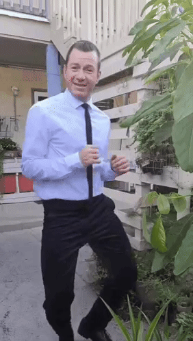
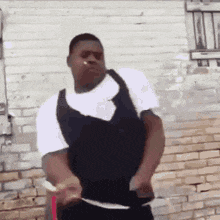

News
- (23/05/2025) "Website Redesign!!" -
This site has been redesigned! Now it looks nicer

- (18/01/2025) "Website Launch!!" -
This site has been launched!

greensouh @2025
This site has been redesigned! Now it looks nicer
This site has been launched!
greensouh @2025